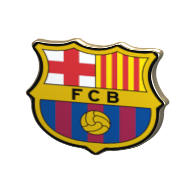

Veinte clubes.
Veinte lugares para empezar.
Dos referentes de cada país, con estadio, centro de formación y escudo de metal y esmalte. Cambiá entre Primera y cantera para revisar cómo se siente cada casa.
20 clubes
